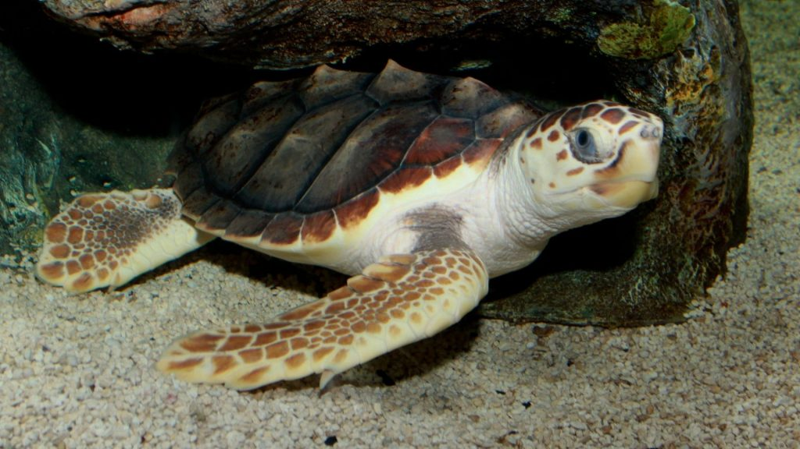
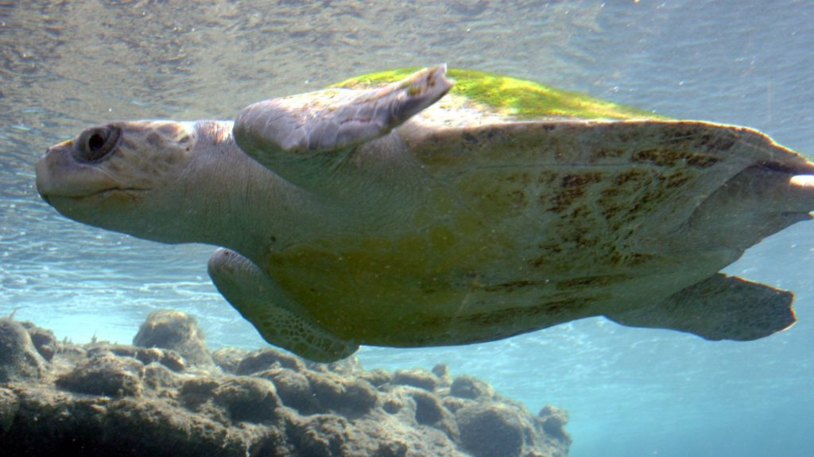

Did you know that five out of seven marine turtle species in the world occur in the waters around Sri Lanka ?
We are providing you with information about sea turtles that nest on Sri Lankan shores.
They are the Green Turtle (Chelonia mydas), the Hawksbill Turtle (Eretmochelys imbricata), the Olive Ridley
Turtle (Lepidochelys olivacea), the Loggerhead Turtle (Caretta caretta), and the Leatherback Turtle
(Dermochelys coriacea). The Sinhalese and Tamil names for sea turtles are Kesbawa and Amai, respectively.
Green Turtle

The Green Turtle is Sri Lanka's most prevalent turtle species. Additionally, they inhabit the Indian,
Pacific, and Atlantic Oceans. Fortunately, this practice is less prevalent today. The majority of
young Green Turtles are carnivores. Adults are herbivores, grazing exclusively on marine vegetation
using their finely serrated molars.
Hawksbill Turtle
Rarer than the Green turtle is the critically endangered Hawksbill Turtle. It reaches a maximal length of 90 cm
and weighs between 50 and 70 kg.The Hawksbill receives its English name from its slender cranium and bird-like
beak, which are used to capture animals lurking in small crevices. It frequents Sri Lanka as well as other
tropical and subtropical waters. Although one of the lesser species of sea turtle, it is renowned for its
exquisite shell, which consists of thirteen symmetrical parts and is very colorful.
Loggerhead Turtle

The Loggerhead Turtle is uncommon in Sri Lanka and more common on the East Coast of the United States.
They are typically scarlet and brown in color, and, as their name suggests, their large heads make them
easy to identify.
It reaches a maximal height of 1m and a weight of 170–200kg. They are predominantly carnivorous,
and their large, muscular canines are ideal for pulverizing crustaceans and mollusks.
Olive Ridley Turtle

The population of this endangered turtle is dependent on a limited number of coastlines in the Indian,
Pacific, and Atlantic oceans.
The Olive Ridley turtle is the smallest of the sea turtles and one of the two species of ridley turtles,
reaching a maximal measurement of 65cm and weighing 35-45kg. It is named for the olive/rust hue of its
shell.
Many Olive Ridley Turtles lay more than 150 eggs at once on Kosgoda Beach, where they nest annually.
They consume crustaceans, fish, and a small amount of marine vegetation.
Leatherback Turtle

This turtle is the largest of the five species and is exceedingly scarce in Sri Lanka. It is still on the verge of extinction.
It is readily recognizable due to its long front appendages and distinctive black-and-white striped exoskeleton; its carapace is a layer of thin, strong, rubbery skin dotted with thousands of bone plates, giving it a leathery appearance. It is the only species of sea turtle without a rigid carapace!
In addition, they have a unique blood circulation system for a cold-blooded reptile, which allows them to keep their blood heated even in frigid waters by utilizing the metabolic heat generated by their muscle activity.
The Leatherback reaches a maximal size of 3 meters and 750 kilograms. Their unique, flexible carapace and seven ridges allow them to descend to depths of 1,500 meters in pursuit of their preferred food, jellyfish!
An estimated five Leatherback Turtles nest annually at Kosgoda Beach.
| Turtle Name |
Scientific Name |
Suborder |
Conservation status |
Maps of the abundant loactions |
| For a more effective experiance refer to the locations where turtles are abundant |
| Green Turtle |
Chelonia mydas |
Testudines |
Endangered |
|
| Hawksbill Turtle |
Eretmochelys imbricata |
Testudines |
Crtically endangered |
|
| Loggerhead Turtle |
Caretta caretta |
Testudines |
Endangered |
|
| Olive-Ridely Sea Turtle |
Lepidochelys olivacea |
Testudines |
Vulnerable |
|
| Leatherback Sea Turtle |
Dermochelys coriacea |
Testudines |
Vulnerable |
|